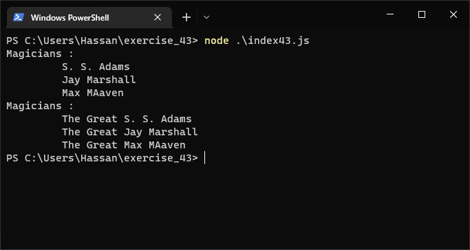
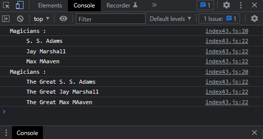

Exercise 43 (Unchanged Magicians)
Problem Statement
- Unchanged Magicians:
-
Start with your work from Exercise 40. Call the function
make_great() with a copy of the array of magicians' names. Because
the original array will be unchanged, return the new array and
store it in a separate array. Call show_magicians() with each
array to show that you have one array of the original names and
one array with the Great added to each magician's name.
Solution
JS Code:
Terminal Output:

Console Output:
